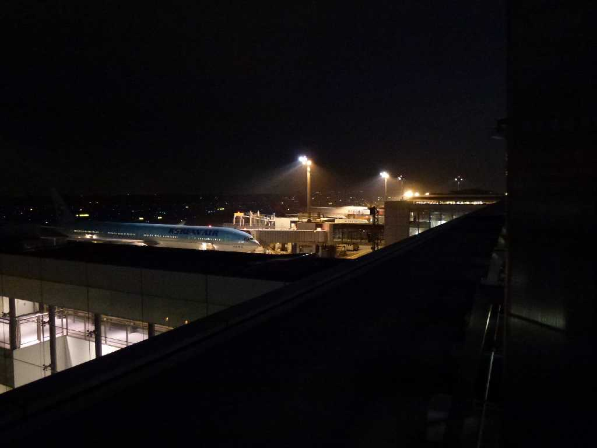

June 24 2013 Departure in Narita international airport Around the world in 80 days by railways
Aeroflot Russian Airlines SU4665 A320 June 24 21:05 Narita to June 25 1:25 Vladivostok
８０日間世界一周鉄道の旅で１日目 成田国際空港をウラジオストックに向け出発しユーラシア大陸約１４,０００㎞と北米大陸約６,０００㎞の約２０,０００㎞列車の旅が始まる